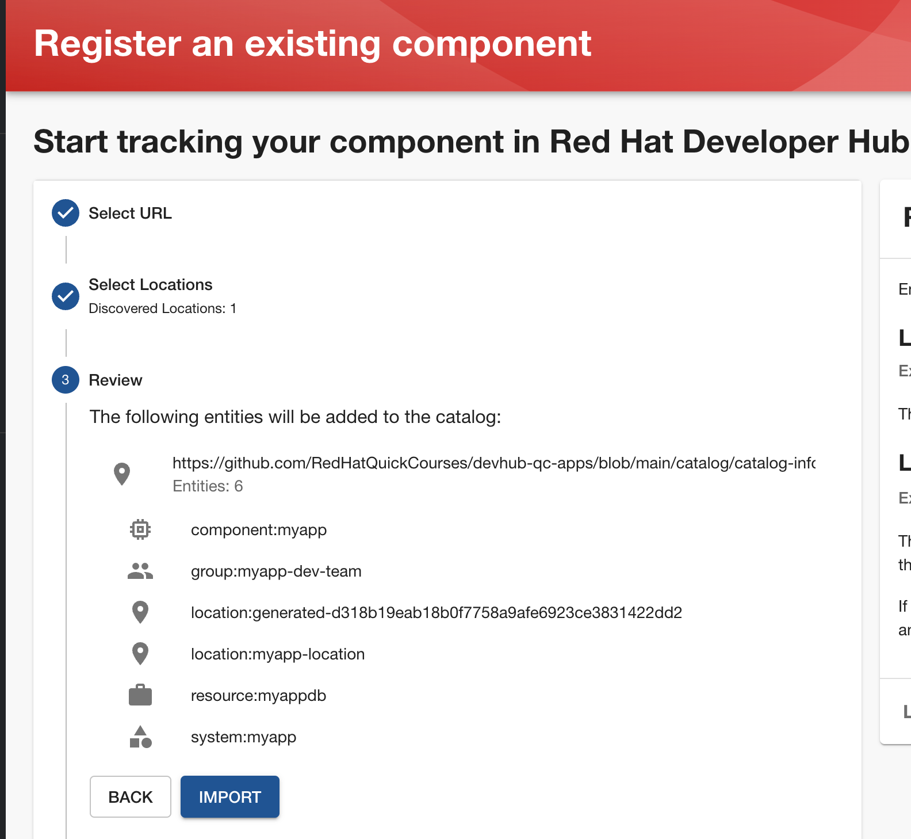
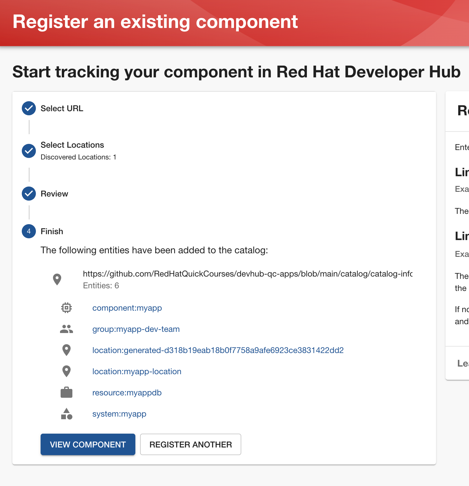
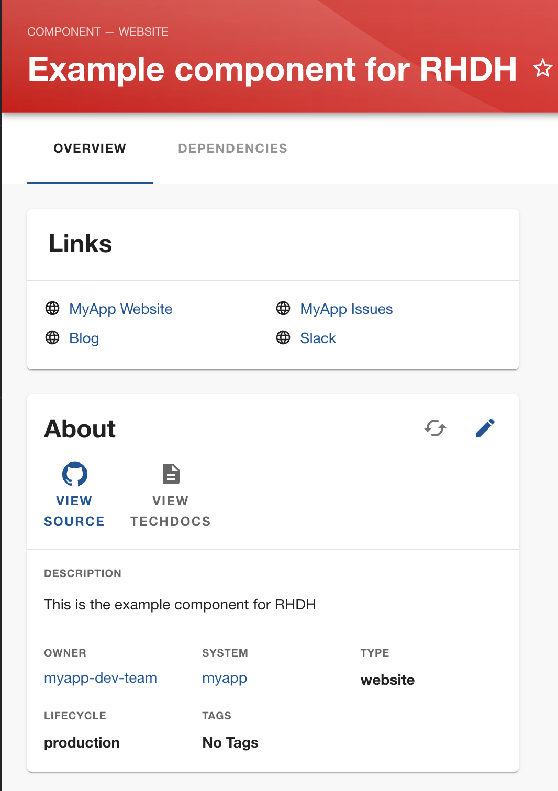
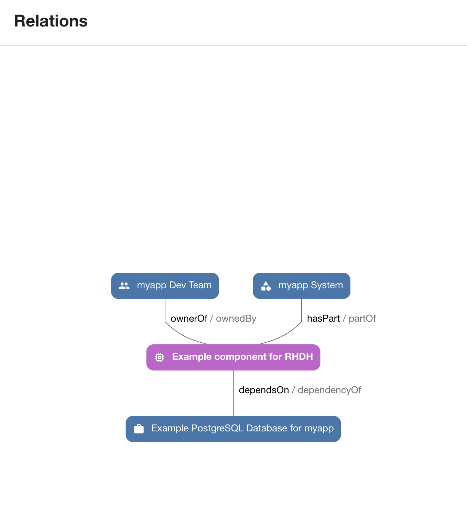
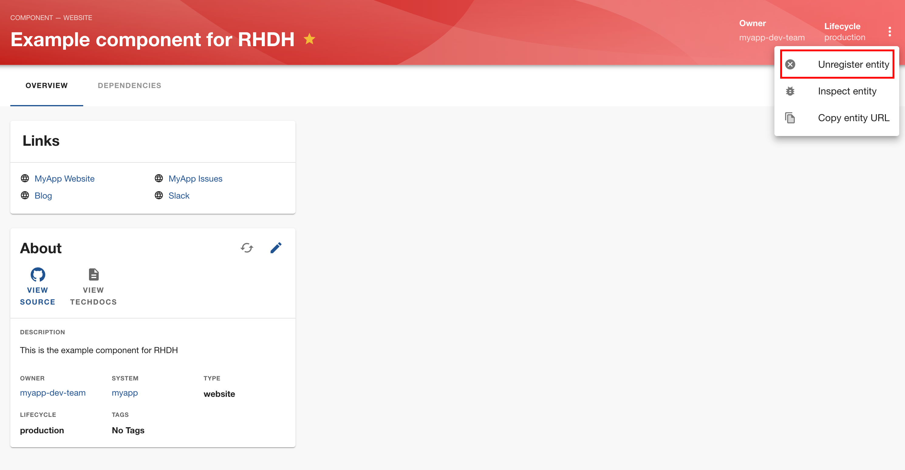
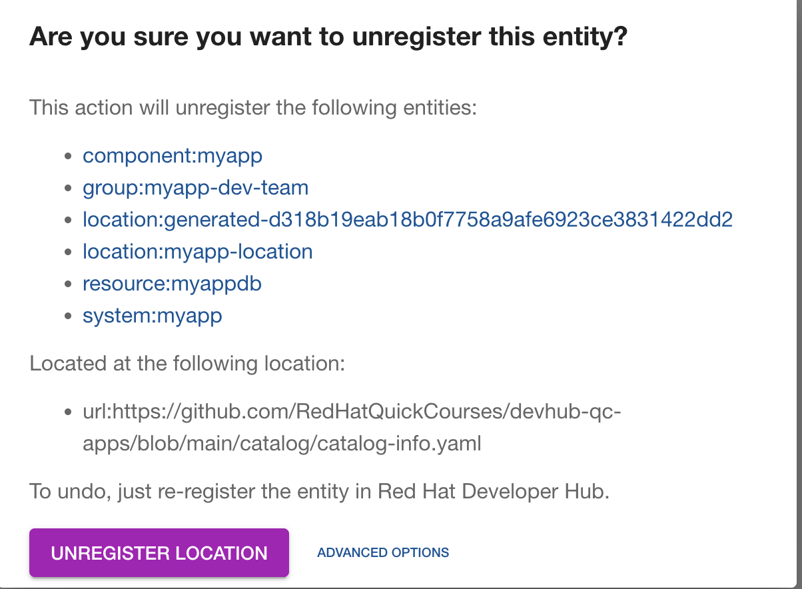
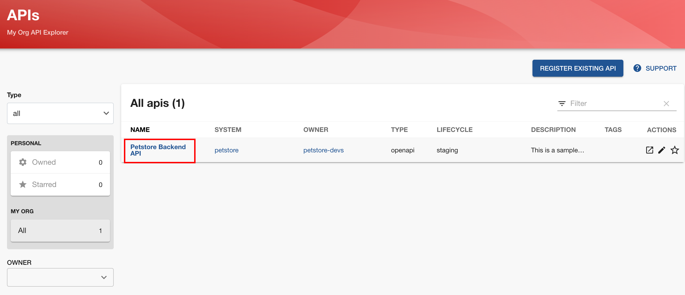
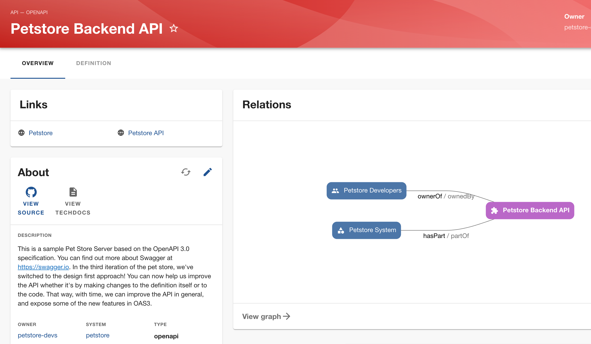
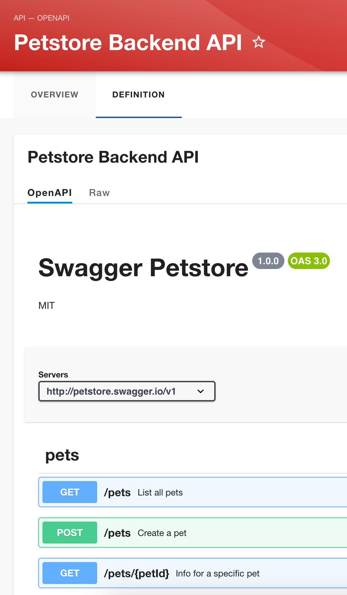

A Deeper Dive into the RHDH Software Catalog
Before you learn about Software Templates in RHDH, you need to understand the concepts and terminology behind the Software Catalog. This section takes a closer look at the Catalog.
The first course in the learning path for RHDH introduced you to the general concept of the Software Catalog or just Catalog. The aptly named Catalog is a collection of Components, also called Entities. Entities can be of different types corresponding to things like APIs, internal and external applications (SaaS), templates, locations where other entities can be found, and many more.
This section walks you though a hands-on experience of populating the Catalog with different types of entities, using many different approaches.
Concepts and Terminology
The following diagram provides a brief overview of how components and entities are populated in the Catalog.
To populate an entity in the Catalog typically involves three phases corresponding to three logical software components in RHDH:
-
Entity Providers are responsible for communicating with different types of entities and import raw data into RHDH.
-
Processors validate, analyze, enrich, and transform the raw entity data into its final form
-
Stitchers gather data emitted by various processors and populate the Catalog API.
The outcome of the last phase is the Catalog API along with search metadata stored locally in RHDH for fast querying. Various plugins and other components in RHDH use the Catalog API to perform different types of actions and display some information to the user, or pass on the processed data to other parts in RHDH. You can consider the Catalog as the main static data around which various dynamic actions are composed.
For more details on each of the phases, consult the references section at the bottom of this section.
The following are some of the most commonly used types of entities in the Catalog:
- Components
-
A
Componentis a generic piece of software (web app, mobile app, a back end service, a front end app, CLI tools, and many more) that can be tracked in a version control system like Git. A component can implementAPIsthat other components consume, or consume APIs implemented by other components. - API
-
APIsare implemented by components and provide formal interfaces between components. APIs are described using many different standards (REST, gRPC, GraphQL, and more) that are ideally machine readable. RHDH has support for documenting, importing, indexing and searching APIs of many different types and exposes them in the Catalog for discovery and exploration by developers across your organization. - Resource
-
Resources are infrastructure dependencies that a component needs to operate at runtime (Databases, Message Queues, Storage systems, Servers, VMs, and more).
- User
-
A user describes a person, such as an employee, or external users like contractors and anyone whom you want to track in RHDH that are part of your software ecosystem.
- Group
-
A group describes a set of
Userslogically grouped into a parent entity (development teams, business units, and more). - Location
-
A location acts as proxy that references other locations to look for catalog data (YAML files).
- Template
-
A
Templateis an RHDH entity that describes a set of source files and structure, from which you can instantiate instances of applications,services, CI/CD pipelines, Infrastructure as Code (IaC) playbooks, operating system and virtual machine provisioning scripts, and more. These instances are then automatically populated and tracked in the RHDH Software Catalog. A Template can contain a mix of source code, configuration files, build system configuration, and all the dependencies that are required for an application or a service. The Template is parsed by RHDH, and it then provides a visual interface to create application instances from it. Dynamic parts that meed user input are modeled asParametersin the template. Input forms corresponding to the parameters are automatically created by RHDH in the front end portal. - System
-
A
Systemis a logical grouping ofResourcesandComponentsthat provides one or moreAPIs. A System abstracts away the resources and private APIs between the components for any consumers. This means that as the owner, you can evolve the implementation, in terms of components and resources, without your consumers being affected. - Domain
-
While
Systemsare the basic level of encapsulation for related entities, it is often useful to group a collection of systems that share terminology, domain models, metrics, KPIs, business purpose, or documentation into a higher level abstraction called aDomain.
Adding Components to the Catalog
Components to be populated in the Catalog are described using YAML files, mostly inspired by Kubernetes configuration files. These YAML files are typically stored in a Git repository alongside the component they describe, and served remotely over HTTP/HTTPS to RHDH for bulk import. There are several different ways of populating the Catalog.
Static Configuration of Catalog
You can directly embed the location if your catalog YAML files in the app-config-rhdh YAML files:
catalog:
locations:
- type: url
target: <location of your YAML>Adding a lot of small catalog YAML files in this manner is not recommended as you need to redeploy the RHDH container for the changes to take effect.
Instead, you can provide the URL of a top-level YAML file that includes other YAML files. This way, you can change the included YAML files without requiring updates to the app-config YAML files.
See https://github.com/janus-idp/backstage-showcase/blob/main/app-config.yaml#L154 for an example of this technique.
Manual Registration of Components
You can manually add components to the Catalog by navigating to the Catalog page in RHDH and then navigating to the CREATE > REGISTER EXISTING COMPONENT. Alternatively, you can click Create… in the RHDH left navigation sidebar and then click REGISTER EXISTING COMPONENT.
You will then be prompted to enter a remote URL which locates the YAML file declaring the details of the new component. RHDH will then fetch the YAML file, parse it and populate the Catalog if the YAML file has valid syntax.
This approach is useful for already existing components and APIs that you want to import into RHDH. You store the catalog YAML file in the same Git repository as the source code of the component.
New Components with Software Templates
Instantiating a Template will automatically populate the Catalog with the instance of the application. This is a fast, efficient, less error prone way to create new components providing self-service capabilities to your developers. You will learn how to create Software Templates and instantiate applications from them in more detail in the next section.
GitHub Auto-Discovery
RHDH provides a GitHub auto-discovery plugin for importing entities into the Catalog automatically (based on a configurable interval). You need to set up GitHub integration in your app-config-rhdh ConfigMap for this to work correctly. You can configure auto-discovery rules so that RHDH can scan your GitHub organization for catalog YAML files based on regular expression patterns, along with custom file and directory structure layouts. By default, the auto-discovery plugin looks for files named catalog-info.yaml.
The GitHub auto-discovery dynamic plugin needs to be enabled by editing the helm chart, and then you need to add the configuration for the discovery process under the catalog.providers.github key in your app-config-rhdh ConfigMap as follows:
catalog:
rules:
- allow: [Component, System, API, Template, Location, Resource, User, Group, Domain] (1)
providers:
githubOrg:
default:
id: development
orgUrl: ${GITHUB_ORG_URL}
github: (2)
providerId:
organization: RedHatQuickCourses (3)
catalogPath: '/rhdh-discovery/catalog-info.yaml' (4)
filters:
branch: 'main' (5)
repository: '.*' (6)
schedule: (7)
frequency: { minutes: 5 }
timeout: { minutes: 3 }| 1 | Allow entities of different types to be populated in the Catalog. By default, only Component, API, and Location is allowed. |
| 2 | The github provider (having a github integration under app.integrations is required) |
| 3 | The GitHub Organization under which RHDH should scan for catalog YAML descriptor files |
| 4 | Path to the catalog YAML files (can use wildcards here) |
| 5 | Tells RHDH to look for YAML files in the mentioned GitHub branch (Optional) |
| 6 | Regular expression matching the repository names(s) - in this case all repositories in the GitHub Org (Optional) |
| 7 | Scheduled interval at which RHDH should fetch and update catalog information. (Optional) |
See https://backstage.io/docs/integrations/github/discovery/ for full details about the different ways you can configure catalogPath, branch, and repository settings.
Updating and Deleting Components
To update component details, teams owning the corresponding Git repository where the catalog YAML files live, update it using normal Git workflow policies. RHDH then automatically fetches the updated information based on a configurable schedule (minutes, hours or days) and then re-indexes and updates the Catalog.
To remove entities from the Catalog, you can delete them from the RHDH component details page. This action will delete the entity and all dependent entities related to it.
| Deleting or moving the catalog YAML files from your Git repositories will not automatically delete the entities in the RHDH web UI. You must remove them manually. Consult the backstage reference documentation for orphan deletion strategy to understand the nuances of the deletion workflow. |
| Deleting entities from the RHDH web UI for auto-discovered entities is not recommended and will not delete the entities. The next scheduled fetch using auto-discovery will re-populate the entities in the Catalog. Delete the original source YAML files in the remote Git repository and then clean up the catalog. |
Catalog Processing Interval and Scheduling
The Catalog pulls data from external sources at periodic intervals. The default is 100-150 seconds (just over 2 minutes). Depending on how many entities to fetch and process, RHDH auto adjusts this interval to avoid overloading the processing loop. It is not a good idea to keep the interval at very low values due to the fact that external sources, for example, GitHub/GitLab etc may have throttling limits, and you may be denied access if the provider feels you are orchestrating a denial of service type attack (DDoS).
You can set the processing interval in your app-config-rhdh ConfigMap as follows. Values of 60 minutes or more, depending on your use-case is recommended. See https://backstage.io/docs/features/software-catalog/configuration/#processing-interval for more details on the possible configuration values.
catalog:
processingInterval: { minutes: 60 }Querying the Catalog
The information contained in the catalog YAML files are presented in the Catalog page of RHDH. You can then filter and search for component information, and have various built-in and custom plugins work on processing the items in the Catalog.
Most of the plugins (core, community provided, and Red Hat provided) act on information indexed by RHDH, and by integrating with the RHDH Catalog API which provides a uniform interface to the information in the catalog.
Catalog Rules
By default, the catalog will only allow the ingestion of entities with the kind Component, API, and Location. In order to allow entities of other kinds to be added, you need to add rules to the catalog. Rules are added either in a separate catalog.rules key or added to statically configured locations.
For example, given the following configuration:
catalog:
rules:
- allow: [Component, API, Location, Template, User]
locations:
- type: url
target: https://github.com/org/example/blob/master/org-data.yaml
rules:
- allow: [Group]We are able to add entities of kind Component, API, Location, User and Template from any location, and Group entities from the org-data.yaml file, which will also be read as a statically configured location.
Note that if the catalog.rules key is present, it will override the default value, so you need to add rules for the default kinds if you want them to be allowed.
The following configuration will reject any kind of entities from being added to the catalog:
catalog:
rules: []Hands on Labs
Pre-requisites
-
A running RHDH instance with valid authentication set up correctly for GitHub authentication.
-
You will use catalog YAML files from the https://github.com/RedHatQuickCourses/devhub-qc-apps GitHub repository. You can either use this repository directly, or fork a copy under your own organization that you created for RHDH integration in the previous course. Note that for GitHub auto-discovery to work correctly, you need to set up integration with GitHub using OAuth2 Apps correctly as outlined in the previous course (
Developer Hub Administration).
Lab 1: Populating the Catalog Manually
In this lab , you will import an example web application called myapp into the RHDH Catalog. myapp depends on a PostgreSQL database resource. The catalog YAML descriptor files are stored in a GitHub repository.
Steps
-
Inspect the top level catalog YAML file at https://github.com/RedHatQuickCourses/devhub-qc-apps/blob/main/catalog/catalog-info.yaml. It contains a
Locationentity pointing to a set of entities that make up themyappapplication.apiVersion: backstage.io/v1alpha1 kind: Location (1) metadata: name: myapp-location (2) description: A collection of all the catalog entities in the 'myapp' example app spec: targets: (3) - ./group.yaml - ./system.yaml - ./myapp-db.yaml - ./myapp.yaml1 Indicates that this is a Locationkind2 A unique name that identifies this location entity 3 A list of entities that are provided by this Location. In this case, a Group, aSystem, a databaseResourceand aComponentrespectively -
Inspect the
group.yaml,system.yaml, andmyapp-db.yamlcatalog descriptor files in the same repository. Note the different uses of theKindand thespecsection defining attributes for this type of entity (who owns it, what it depends on, and more). You can also reference entities from the catalog that were populated automatically - for example, teams and users information from GitHub Organizations. -
Finally, inspect the
myappdefinition at https://github.com/RedHatQuickCourses/devhub-qc-apps/blob/main/catalog/myapp.yamlapiVersion: backstage.io/v1alpha1 kind: Component (1) metadata: name: myapp (2) title: Example component for RHDH description: | This is the example component for RHDH links: (3) - title: MyApp Website url: https://myapp.example.com - title: MyApp Issues url: https://jira.myapp.com - title: Blog url: https://myapp.example.com/blog - title: Slack url: https://myapp.example.slack.com annotations: (4) argocd/app-name: 'myapp' backstage.io/kubernetes-id: 'myapp' github.com/project-slug: myorg/myapp quay.io/repository-slug: myorg/myapp backstage.io/kubernetes-namespace: myapp spec: type: website (5) system: myapp (6) owner: myapp-dev-team (7) lifecycle: production (8) dependsOn: - resource:myappdb (9)1 Indicates that this entity describes a Component 2 A unique name for this component 3 A set of links related to this application. For example, where issues are tracked, the communication channels, the QA testing links etc 4 A set of annotations, mostly for plugins. Consult the plugin documentation for supported annotations 5 Declare this component of type website 6 This component belongs to a system named myapp7 This component is owned by the myapp-dev-team8 This component is part of the productionenvironment. You can type any arbitrary string value here, for example, Dev, QA, Staging etc9 This component depends on a database resource called myappdbdeclared previously in themyapp-db.yamlfileMany of these annotations and dependencies and details mentioned in the
specsection are used by RHDH to create UI visualizations for you in the portal. -
Navigate to the RHDH home page and then click
Create… > REGISTER EXISTING COMPONENT. Provide the link to the top levelLocationentity, that ishttps://github.com/RedHatQuickCourses/devhub-qc-apps/blob/main/catalog/catalog-info.yamlas the value in theSelect URLfield. -
Click
ANALYZE. If the YAML is valid, you will be shown the results of the analysis. Otherwise, you will a descriptive error message. Fix the error in the YAML files, and proceed with the import.Figure 2. Result of YAML Analysis -
Review the results of the analysis, and then Click
IMPORT.Figure 3. Analysis Results -
Click on
VIEW COMPONENTto view the imported details.Figure 4. myapp Details Imported SuccessfullyIf you see any warnings or errors about missing entity references, then correct your YAML files and re-import the entities. Every reference to an entity must be in the Catalog (either pre-existing, or created along with the entity you are populating into the Catalog). -
Click on the
DEPENDENCIEStab in the component details page. Notice how RHDH has created a nice visualization of your application’s dependencies, systems, and owners.Figure 5. Component Dependencies -
Switch back to the
Catalogpage and note you now have many more options in theKinddrop-down. Filter the catalog by selecting different options forKindandType. You can 'star' the component and have it appear on your RHDH home page for convenient access. -
Clean up. Delete the entities you imported. From the component details page, expand the menu in the top right corner (three vertical dots) and select
Unregister entity. You will be prompted to review the details of the component and a warning will be provided that this component and all its dependencies will be deleted from the catalog. ClickUNREGISTER LOCATIONto remove the component.Figure 6. Unregister EntityFigure 7. Remove Entity from CatalogThere are several nuances to deleting entities from the catalog. For example, due to human error, some child entities could become dissociated from parent entities. RHDH detects these changes and marks these entities with no association as orphanedand does not delete them. Read more about the details of the deletion strategy at https://backstage.io/docs/features/software-catalog/life-of-an-entity#orphaning
Lab 2: GitHub Auto-Discovery of API Components
In this lab, you will configure RHDH to auto-discover catalog YAML descriptor files for an API entity from repositories in your GitHub organization. YAML files matching certain patterns are automatically imported into the Catalog.
Steps
-
Inspect the
https://github.com/RedHatQuickCourses/devhub-qc-apps/tree/main/rhdh-discovery/catalog-info.yamlfile, which references thepetstore-api.yamlfile. Thepetstore-api.yaml' file declares an `APIentity for thePetstoresample application. Note theKinddeclaration ofAPI, and thespecdeclaration for thetypeanddefinitionpointing to the OpenAPI YAML file describing the API end points for the Petstore backend service.apiVersion: backstage.io/v1alpha1 kind: API metadata: ... spec: type: openapi system: petstore owner: petstore-devs lifecycle: staging definition: $openapi: https://github.com/OAI/OpenAPI-Specification/blob/main/examples/v3.0/petstore.yaml -
Configure the GitHub auto-discovery plugin in the
app-config-rhdhConfigMap. Notice that you do not mention the repositories where the catalog YAML files live, but only provide a regular expression path where you expect the YAML files to leave for each of the components you want to import into RHDH.This configuration needs a disciplined approach to creating and maintaining the catalog YAML files, where every component you want to import into RHDH needs to follow the folder structure, naming convention of the YAML file, branch naming scheme described in the configuration.
catalog: rules: - allow: [Component, System, API, Template, Location, Resource, User, Group, Domain] providers: githubOrg: default: id: development orgUrl: ${GITHUB_ORG_URL} github: providerId: organization: RedHatQuickCourses catalogPath: '/rhdh-discovery/catalog-info.yaml' filters: branch: 'main' repository: '.*' schedule: frequency: { minutes: 5 } timeout: { minutes: 3 }In production systems, ensure that you set the schedule at a higher value (for example, 60 minutes or even more) to avoid frequent scans of your Git repository. You may be throttled or denied access if the scanning is too frequent. -
To make RHDH auto-discover this entity, enable the GitHub auto-discovery plugin in the RHDH Helm chart. Navigate to the
rhdhhelm chart and clickUpgrade. Switch to the form view, adn then navigate toglobal → Dynamic plugins configuration → List of dynamic plugins that should be installed in the backstage application → Package specification of the dynamic plugin to install, add the following value:./dynamic-plugins/dist/backstage-plugin-catalog-backend-module-github-dynamic -
Click
Upgradeand wait for the RHDH pods to be recreated. RHDH will auto-discover your catalog YAML descriptor files under your GitHub Organization based on thescheduleconfiguration. Inspect the RHDH container logs if you see any errors and fix the configuration inapp-config-rhdhand redeploy. A successful scan by the plugin should result in logs like the following:
... catalog info Read 16 GitHub repositories (14 matching the pattern) type=plugin target=github-provider:providerId class=GithubEntityProvider...-
Log in to RHDH as an authenticated user and click on
APIs. Notice that RHDH has populated the Catalog based on your YAML descriptor file.Figure 8. API auto-discovered by RHDH -
Click on the
Petstore Backend APIentry to view the details of the imported API.Figure 9. Petstore API Details -
Click in the
DEFINITIONtab and notice how RHDH has detected the OpenAPI definition for this API and renders a nice swagger page for the API end points.Figure 10. OpenAPI documentation
Optional Hands-on Exercise
-
If you have forked the
devhub-qc-appsrepository into your own GitHub organization, update the YAML files and verify that RHDH re-imports and updates the Catalog. -
Explore the more detailed showcase example application at https://github.com/janus-idp/backstage-showcase/blob/main/catalog-entities/all.yaml. Note the nested includes of various YAML files to better organize a large system, and a set of its related applications and dependencies.
-
If your GitHub organization has thousands of repositories, and you want more control over how the GitHub auto-discovery plugin scans your repositories, you need to optimize the
catalogPathandfilterattributes inapp-config-rhdh. See https://backstage.io/docs/integrations/github/discovery#configuration for more examples.